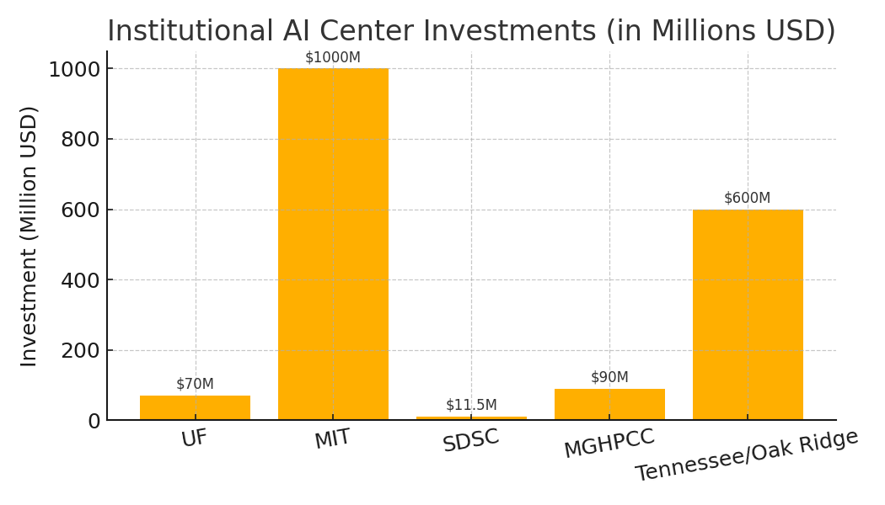

final_index_html = """
AI Data Center Portfolio
1. CapEx (Capital Expenditure)
CapEx covers one-time investments to build the data center, such as construction, high-density GPU racks, cooling systems, and network infrastructure. These costs vary based on AI workload requirements and hardware density.
| Component | Estimated Cost |
|---|
| Basic Data Center Buildout (per MW) | $8M - $15M |
| High-Density GPU Racks (per rack) | $200K - $400K |
| Power & Cooling (Liquid/Direct) | 30–40% of total CapEx |
| Network Infrastructure (Infiniband/10/100GbE) | $1M – $3M |
Estimated Total: $10M - $20M per MW
2. OpEx (Operational Costs)
OpEx includes recurring costs to operate the data center, such as power consumption, staff salaries, cooling system maintenance, hardware refresh cycles, and software licensing.
| Category | Range / Unit |
|---|
| Power | $0.10 – $0.15 per kWh |
| Staffing & Ops | $500K – $1M annually per site |
| Cooling Maintenance | $100K – $300K annually |
| Hardware Refresh | Every 3–5 years (~20% annualized) |
| Support Software Licenses | Varies (open source or vendor support) |
Estimated Annual Total: $700K - $1.5M per site
3. Cloud vs. On-Prem GPU Cost
Cloud services offer flexibility but are costlier at scale. On-premises solutions and shared community GPU models (like NCShare) reduce long-term costs for large workloads.
| Platform | Cost per GPU Hour (USD) |
|---|
| AWS / Azure / GCP | $2.00 – $5.00 |
| Dedicated On-Prem | $0.80 – $1.50 |
| Shared Community Model (NCShare-like) | $0.60 – $1.00 |

4. Institutional AI Center Cost Examples
Universities and research centers have invested heavily in AI infrastructure, demonstrating various models of funding, sustainability, and performance optimization.
| Institution | Total Investment | Key Features |
|---|
| University of Florida – AI Supercomputing Center | $70M | HiPerGator AI supercomputer, $25M NVIDIA donation. |
| MIT Schwarzman College of Computing | $1B | Interdisciplinary AI research and policy focus. |
| San Diego Supercomputer Center (SDSC) | $11.5M | NSF-funded AI/ML HPC system (Expanse). |
| MGHPCC (Massachusetts Green HPC Center) | $90M | Shared HPC facility powered by green energy. |
| University of Tennessee + Oak Ridge (Frontier) | $600M+ | World's fastest supercomputer (as of 2022). |

5. Recommendations
Strategies to optimize cost, improve performance, and ensure scalability of AI data center infrastructure.
- Shared GPU infrastructure at MCNC can reduce costs by 30–50% compared to cloud.
- Use Slurm for scheduling and containerized workloads.
- Implement a strong backup and redundancy strategy.
- Leverage grants and vendor credits (AWS, NVIDIA, Dell) for initial funding.
6. Risks & Sustainability Considerations
AI data centers face challenges related to high energy costs, vendor lock-in, and hardware refresh cycles.
- Energy Costs: Mitigated with renewable energy credits, peak-shaving strategies, and dynamic cooling.
- Vendor Lock-In: Use container-based workloads and open orchestration to prevent dependency.
- Long-Term Viability: GPU reuse and power-optimized scheduling help extend infrastructure life.
"""
final_index_path = "/mnt/data/index.html"
with open(final_index_path, "w") as f:
f.write(final_index_html)
final_index_path